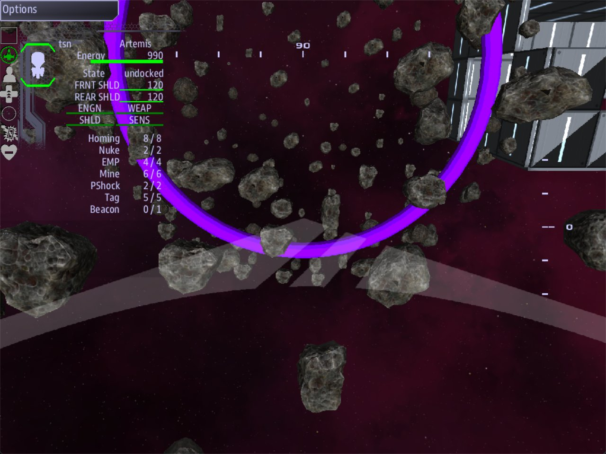

Class 4, Lecture 3 - Dressing a ruin¶
What you will have at the end¶
The Hollow stops being bare rock. It is a cave with one built hall, a purple haze inside it, a hoop of metal across the first passage, and three named places. The ruin's name on the map sits at the way in. The other two places turn up on the map as the ship reaches them.

The Ring across the first passage: one Prop line and one Dress line.You will add lines to the Relics section of mission.amd. You will not touch
story.mast.
Today is about how the ruin looks and where its places are. What a place says, and what is lying in it, come in later lectures. The walls are still scenery: they do not stop a ship.
The video¶
About 6 minutes. Subtitles are available in the player.
Before you start¶
MyRuinas Lecture 2 left it: The Hollow, with The Mouth, The Nave and The Vault.mission.amdis 92 lines long, or 100 with The Gallery from Lecture 2's exercise.sbs lint MyRuinsaysclean.- VS Code with the mission folder open, a command prompt open in
C:\Cosmos\data\missions, and the game closed.
Step 1 - A built room to dress¶
Two of today's fields only show on a room with flat walls. So the ruin needs one box.
If you did the exercise in Lecture 2, you have The Gallery. Make its fence read like the one below. If you did not, go to the end of the file, leave one blank line below The Vault's note, and type:
### [The Gallery](gallery)
---
Relic: hollow
Box: 3000, 0, -1900, 600, 400, 800
Passage to: nave 300
---
A built room, with flat walls and real corners. Somebody added this later.
A box has six numbers: where its middle is, then half its width, half its height and half its length. This one is 1200 by 800 by 1600, and a tunnel joins it to The Nave.
Step 2 - Say what the walls are made of¶
Find the ruin itself, The Hollow. Add one line under Loc::
Walls: names a look for the whole ruin. There are five words.
| You write | A round room gets | A box gets | Reads as |
|---|---|---|---|
rock |
Asteroids scattered round it | The same | A cave |
plates |
Thin flat plates laid round it | Thin flat plates on each of its six sides | Hull plating |
blocks |
The same, but thick | The same, but thick | Masonry |
ribs |
The plate piece, laid as bars | Plates, with bars laid across them | A bored shaft |
none |
Nothing | Nothing | Open space |
Leave the line out and you get rock. That is what you flew through in Lecture 2.
The game builds a wall out of many small pieces. For this ruin, with its four rooms, it makes:
Walls: |
Pieces |
|---|---|
rock |
448 asteroids |
plates |
373 plates |
blocks |
373 blocks |
ribs |
373 plates and 14 bars. All 14 bars are in The Gallery |
none |
None |
Every one of those also has 60 loose rocks drifting inside the rooms. That includes
none. Step 4 changes that number.
Capital letters do not matter in this one field: Walls: Plates works.
Want to see the difference? Change rock to plates, play the mission, and change it
back. The rest of this page assumes rock.
Step 3 - One room that differs¶
A ruin is rarely one material all through. Say only where it changes.
Add one line to The Gallery:
### [The Gallery](gallery)
---
Relic: hollow
Box: 3000, 0, -1900, 600, 400, 800
Passage to: nave 300
Walls: blocks
---
Now the ruin is a cave, and the hall somebody built in it is masonry.
Add one line to The Vault:
### [The Vault](vault)
---
Relic: hollow
Chamber: 3000, 0, 2800, 700
Passage to: nave 300
Art: plain_asteroid_9
---
Art: names the exact piece to build a room's walls from. The game has six asteroid
shapes, plain_asteroid_6 to plain_asteroid_11, and a rock wall normally mixes all six.
With this line the wall of The Vault is one shape only.
| Rule | What it means |
|---|---|
A room with no Walls: line |
It takes the ruin's |
| A passage | It always takes the ruin's. A passage has no record, so there is nowhere to write a line for it |
Walls: on a room |
Only that room changes |
Art: on a room |
It changes the piece, not the look. In a rock room you get that rock. In a plates room you get that rock squashed flat into a plate, so keep Art: for rock rooms |
Two keys in Art: |
Write them with a comma: Art: plain_asteroid_9, plain_asteroid_10. The wall mixes the two |
Step 4 - Three dials¶
Go back to The Hollow. Add three lines under Walls::
| Line | What it sets | Leave it out and you get |
|---|---|---|
Seed: 12 |
Which rock goes where. The same number builds the same ruin every time you play. A different number rearranges it | 7 |
Debris: 30 |
How many loose rocks drift inside the rooms. 0 is none |
60 |
Gaps: 0.2 |
How much of a built wall is missing. 0 is a whole wall. 0.2 is one piece in five gone. 1 is no wall at all |
0.06 |
Gaps: is a number from 0 to 1. It is not a percentage. And it only touches rooms with
flat walls: a box wearing plates, blocks or ribs. In this ruin that is The Gallery.
Here is what its wall of blocks came to:
Gaps: |
Blocks in The Gallery |
|---|---|
0 |
82 |
| not written | 77 |
0.2 |
67 |
0.5 |
41 |
1 |
0 |
There is a fourth dial, Plate:. It sets how big one piece of a flat wall is. Leave it
out and the game fits the pieces to the room. If you do write it, keep it between 150 and
2000: the game makes as many pieces as it takes to cover the wall, so it will not go
smaller than 150, and lint tells you when you have asked it to.
All four dials belong to the ruin. Written on a room they do nothing, and lint tells you to move them.
Step 5 - Fill it with haze¶
Add one more line to The Hollow:
The ruin is now filled with one cloud of nebula in that color.
| You write | You get |
|---|---|
purple, blue, red, green, orange, white or yellow |
A cloud of that color |
none, or no line |
No cloud |
Capital letters do not matter: Purple is purple. A word that is not one of the seven
gives you no cloud at all, and lint names it.
Like the dials, this line belongs to the ruin. On a room it does nothing.
Step 6 - Stand something in it¶
A set piece is one thing standing in the ruin: a gate, a pillar, a statue. Add this record at the end of the file:
### [The Ring](ring)
---
Relic: hollow
Prop: 1400, 0, 0
Dress: generic-torus 4
Facing: nave
---
A hoop of worked metal, set across the first passage. You fly through it.
| Line | What it means |
|---|---|
Prop: 1400, 0, 0 |
Where it stands. Three numbers, measured from the ruin's Loc:, the same as a room. This spot is the middle of the passage between The Mouth and The Nave |
Dress: generic-torus 4 |
What it is, then how big. generic-torus is a ring. The 4 makes it four times its own size |
Facing: nave |
Which way it looks. This is the key of a room, or of a named place. Leave the line out and it looks at the middle of the room it is nearest |
A prop is scenery. It takes no space out of the ruin, and a ship flies straight through it.
The ring is 210 across at size 1, so at size 4 it is 840 across. The passage it stands in is 700 across. So the hoop frames the tunnel.
Your mission can use these shapes with nothing added:
| Key | It is |
|---|---|
generic-torus |
A ring |
generic-sphere |
A ball |
generic-cube |
A cube |
generic-cylinder |
A tube |
generic-cone |
A cone |
generic-icosahedron |
A solid with twenty faces |
A shape with no size after it is built at size 1.
What an art pack adds¶
Those shapes are plain. A kit is the real thing: wall, floor and ceiling pieces, and
set pieces such as gates and statues, drawn for one kind of ruin. Kits come in an art
pack. The pack named ruins holds five: torgoth, kralien, choir, hulk and cave.
Your mission has no art pack, so it has no kits. That is not something you can change
from mission.amd. It takes a line in each of three other files, and one of them is
story.mast. This course has not reached that yet.
What you can do today is write a list. Both of these fields take one:
The game uses the first word it knows. In your mission today that is plates, and the
ring. On the day the pack is added, the same two lines become that kit's walls and its
gate.
Always end a Walls: list with one of the five words from Step 2. Lint warns you when
you do not.
Step 7 - Name the places¶
A point is a named spot inside the ruin. It is not a room. It adds no space and takes none away. Add three at the end of the file:
### [The Way In](way_in)
---
Relic: hollow
Point: 0, 0, -700
Roles: entrance
---
Where a ship arrives. The name on the map sits here.
### [The Altar](altar)
---
Relic: hollow
Point: 3000, 0, 2800
Roles: altar
---
The middle of the Vault. Whatever was kept here is gone.
### [The Niche](niche)
---
Relic: hollow
Point: 3000, 0, -2500
Roles: niche
Hidden: yes
---
A recess at the back of the Gallery. Easy to miss.
Point: has three numbers, measured from the ruin's Loc: like everything else. Put a
point inside a room. The Altar has the same three numbers as The Vault's middle. The Niche
is 200 short of The Gallery's back wall.
Roles: says what the place is for. A role is a word of your own, the same kind of word
as derelict on the hulk. Keep it to one word in small letters, and pick a word nothing
else in your mission uses. The marker wears the role, so a point with Roles: derelict
would count as a derelict.
One role means something to the game: entrance.
| Point | What the game does with it |
|---|---|
The Way In, Roles: entrance |
The ruin's name on the map moves here. It was at the ruin's Loc:, 0, 0, 20000. Now it is at 0, 0, 19300, 700 nearer the station |
The Altar, Roles: altar |
The game stands an invisible marker here, wearing the role altar. When a ship comes within 1200 of it, the marker becomes a gold contact named The Altar that the crew can select. It stays that way |
The Niche, Roles: niche and Hidden: yes |
The same marker. Hidden: is for a crew that goes in wearing suits (Lecture 8): the place is kept off the list of places they can be sent, until somebody has been within 1200 of it. For a ship, today, it changes nothing you can see |
A point with no Roles: line |
No marker. Nothing on the map, ever |
The Way In gets a marker of its own too, like the other two.
Two rules:
- If two points say
Roles: entrance, the one written first in the file gets the name. - With no
entrancepoint, the name stays at the ruin'sLoc:.
A role does more in Lecture 7, where a quest step says reach altar.
If you open the Relic Plan from Lecture 2, your three points are drawn on it. The Ring is not: the plan does not draw props.
Your finished section¶
## [Relics](relics)
### [The Hollow](hollow)
---
Loc: 0, 0, 20000
Walls: rock
Seed: 12
Debris: 30
Gaps: 0.2
Atmosphere: purple
---
Older than anyone who could have built it. Three rooms, as far as anyone knows.
### [The Mouth](mouth)
---
Relic: hollow
Chamber: 0, 0, 0, 900
---
The way in. Wide, and worn smooth.
### [The Nave](nave)
---
Relic: hollow
Chamber: 3000, 0, 0, 1100
Passage to: mouth 350
---
The big room. Whatever this place was for, it happened here.
### [The Vault](vault)
---
Relic: hollow
Chamber: 3000, 0, 2800, 700
Passage to: nave 300
Art: plain_asteroid_9
---
The far end. Small, round, and a long way from the door.
### [The Gallery](gallery)
---
Relic: hollow
Box: 3000, 0, -1900, 600, 400, 800
Passage to: nave 300
Walls: blocks
---
A built room, with flat walls and real corners. Somebody added this later.
### [The Ring](ring)
---
Relic: hollow
Prop: 1400, 0, 0
Dress: generic-torus 4
Facing: nave
---
A hoop of worked metal, set across the first passage. You fly through it.
### [The Way In](way_in)
---
Relic: hollow
Point: 0, 0, -700
Roles: entrance
---
Where a ship arrives. The name on the map sits here.
### [The Altar](altar)
---
Relic: hollow
Point: 3000, 0, 2800
Roles: altar
---
The middle of the Vault. Whatever was kept here is gone.
### [The Niche](niche)
---
Relic: hollow
Point: 3000, 0, -2500
Roles: niche
Hidden: yes
---
A recess at the back of the Gallery. Easy to miss.
Every new record has three hashes and a Relic: hollow line, the same as a room.
Step 8 - Check it¶
You want clean under mission.amd.
Lint names every mistake in this table. The word in the last column is at the end of the line lint prints.
| Mistake | What the game does | Lint says |
|---|---|---|
Walls: plats, or Walls: bloks, plates |
Plain rock for plats. For the second, plates |
relic-walls-word: did you mean plates? |
Walls: rib on The Gallery |
That room is plain rock | relic-walls-word, and relic-unknown-walls |
Walls: plates blocks (two words, no comma) |
Plain rock | relic-unknown-walls |
Walls: torgoth (a kit, and no word from Step 2 after it) |
Plain rock, unless the kit is loaded | relic-unknown-walls. End the list with a word from Step 2 |
Walls: torgoth.zip, plates |
plates |
relic-walls-word: it looks like a file name |
Wall: plates or Role: entrance (the field's name is wrong) |
The line is ignored | unknown-field |
Walls: on a point or a prop |
Nothing | relic-field-wrong-record |
Seed:, Debris:, Gaps:, Plate: or Atmosphere: on a room |
Nothing. These belong on the ruin | relic-field-wrong-record |
Any of today's lines written below the closing --- |
It is part of your note, so nothing | field-below-fence |
Seed: abc, Debris: lots, or Gaps: 20% |
The game uses a number of its own | relic-dial-range: not a number |
Gaps: 2 |
The same as 1: a built room with no walls at all |
relic-dial-range: from 0 to 1 |
Plate: 20 |
The game uses 150, the smallest plate it allows | relic-dial-range: from 150 to 2000 |
Atmosphere: purpel, or violet, or purple, red |
No cloud at all, and a line in mast.runtime.log |
relic-unknown-atmosphere, and the seven colors |
Dress: generic-torus.obj 4 |
Nothing is placed, and a line in mast.runtime.log |
relic-unknown-dress: no file ending |
Dress: on a room |
Nothing is placed. Dress: goes on a prop or a point |
relic-dress-on-room |
Prop: with two numbers |
Nothing is placed | relic-short-part |
A prop with no Dress: line |
Nothing is placed | relic-prop-no-dress |
Facing: naive (a key that does not exist) |
The piece looks at the middle of its room | relic-facing-unknown |
Point: with no numbers, with two numbers, or with a word |
The place is not made | relic-short-point |
| A point outside every room | A marker in solid rock | relic-point-outside |
A point inside a Solid: (a pillar; solids are in the reference) |
The marker is made inside the pillar | relic-point-in-solid |
Hidden: yes on a point with no Roles: |
The place is never found | relic-hidden-unreachable |
Hidden: maybe |
Not hidden | relic-hidden-value: write yes |
Roles: entrence |
The ruin's name on the map stays at Loc: |
relic-role-near-entrance |
Roles: entrance on two points |
The first one in the file gets the name | relic-two-entrances |
| A point written with four hashes | The place is not made | relic-part-level: give it 3 hashes |
A point with no Relic: line |
The place is not made, and a line in mast.runtime.log |
relic-part-no-owner |
Relic: Hollow (a capital in the key) |
The part is not made | relic-dangling-parent |
| A point with the same key as a room | Do not rely on either | duplicate-key |
What lint cannot see¶
Lint says clean for everything in this second table. The game tells you about the first
two: play once, then open mast.runtime.log in your mission folder. It should be empty.
| You wrote | What happens | What tells you |
|---|---|---|
Art: plain_astroid_9 (a key that does not exist) |
The room falls back to ordinary mixed rock | A line in mast.runtime.log naming the key and the room |
Dress: generic-tortus 4, or a kit's name such as Dress: torgoth |
Nothing is placed | A line in mast.runtime.log naming the key and the prop |
Dress: generic-torus, 4 (a comma), or Dress: generic-torus four |
The ring is built at size 1: 210 across, inside a tunnel 700 across | Nothing |
Roles: the altar (two words) |
The place wears one role, spelled with the space in it. Nothing later can name it | Nothing |
Walls: in a fence under ## [Relics](relics) |
Nothing. Walls: goes on the ruin or on a room |
Nothing |
Atmosphere: Purple (a capital) |
A purple cloud. Capitals do not matter | It is not a mistake |
Step 9 - Play it¶
Start the game with a server and a Helm console, the way you did in Lecture 2:
- On Helm's map, find The Hollow. It should be a little nearer the station than last time: 19300 out, not 20000.
- Fly to it. You should be inside a purple cloud, in The Mouth.
- Turn toward The Nave. The Ring should stand across the tunnel. Fly through it.
- From The Nave, fly on to The Vault. As you come up the tunnel, a contact named The Altar should appear on the map.
- Go back through The Nave and into The Gallery. Its walls should be flat gray blocks, with holes where pieces are missing. At the far end, The Niche should appear.
The walls are still scenery. Nothing here stops the ship.
If something goes wrong¶
| What you see | Likely cause |
|---|---|
| No ruin at all | Lint has a warning from Lecture 2's list. Open mast.runtime.log in the mission folder |
| The whole ruin is rock, and you asked for something else | The word after Walls: is misspelled, or the line is below the closing ---. Lint names the first |
| The Gallery is rock like the rest | Its Walls: line is misspelled, or it is on the wrong record |
| The Gallery has no walls | Gaps: is 1 or more |
| No cloud | The color is not one of the seven, or Atmosphere: is on a room, not on the ruin. Lint names both |
| No ring | The key after Dress: is misspelled (open mast.runtime.log), or Prop: has fewer than three numbers (lint names it) |
| The ruin's name is in the middle of The Mouth, not at the way in | entrance is misspelled, or the line says Role: |
| The Altar never appears | The point has no Roles: line, or you did not come within 1200 of it |
Exercise¶
- Change The Gallery from
blockstoribsand play. Then changeGaps: 0.2toGaps: 0.6and play again. The Gallery had 67 plates and 14 bars. Now it has 36 plates and the same 14 bars:Gaps:removes plates and leaves bars. - Put something on the altar. A point can be dressed, the same as a prop. Add this line to The Altar's fence:
The piece stands on the point. 3. Add a hidden place of your own in The Nave, below The Niche:
### [The Well](well)
---
Relic: hollow
Point: 3000, -600, 0
Roles: well
Hidden: yes
---
A shaft in the floor of the Nave.
The middle number is height. -600 is 600 below the middle of the room.
4. Break it on purpose. Change Walls: ribs to Walls: rib. Run lint and read the
warning. Put the s back.
5. Break it where lint cannot see. Change Dress: generic-torus 4 to
Dress: generic-tortus 4. Run lint: clean. Play: no ring. Put it back.
6. Change the color of the cloud, and change Seed: to a number of your own. Play twice.
The rocks should be in the same places both times.
Checkpoint¶
You are done when all five are true:
sbs lint MyRuinshowsmission.amdasclean.- In the game, the ruin's name on the map is at the way in, not in the middle of the first room.
- There is a colored cloud inside the ruin, and it is the color you wrote.
- One room has built walls and the others are rock.
- A contact with a name you wrote appears on the map when the ship reaches that place.
Next¶
Lecture 4 makes a place speak: the ship comes close to The Altar, and a recording calls it on Comms.
Further reading¶
- "Relic interiors" in the library documentation: every field of a ruin. See "What the
walls are made of", "Kits: walls from an art pack", "Set pieces" and "Places inside it".
It also covers
Solid:, a pillar or a mass in the middle of a room. - The
Cosmos-Tilesrepository's README, "Using the 3D pack (ruins)": the three lines that add the art pack to a mission. relics\voice.amdandrelics\false_choir.amdin Storm's Beacon: two shipped ruins dressed with kits, set pieces and points.
Download this lecture's finished files (a zip of its example folder).